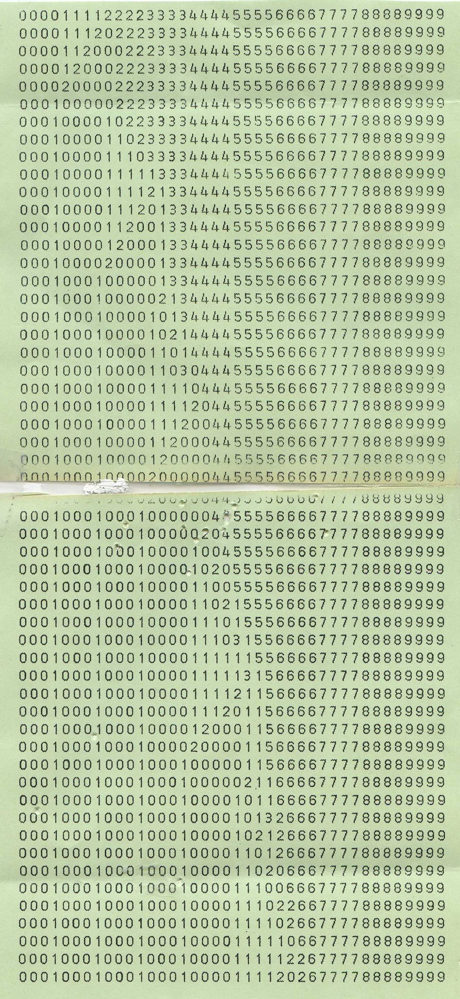
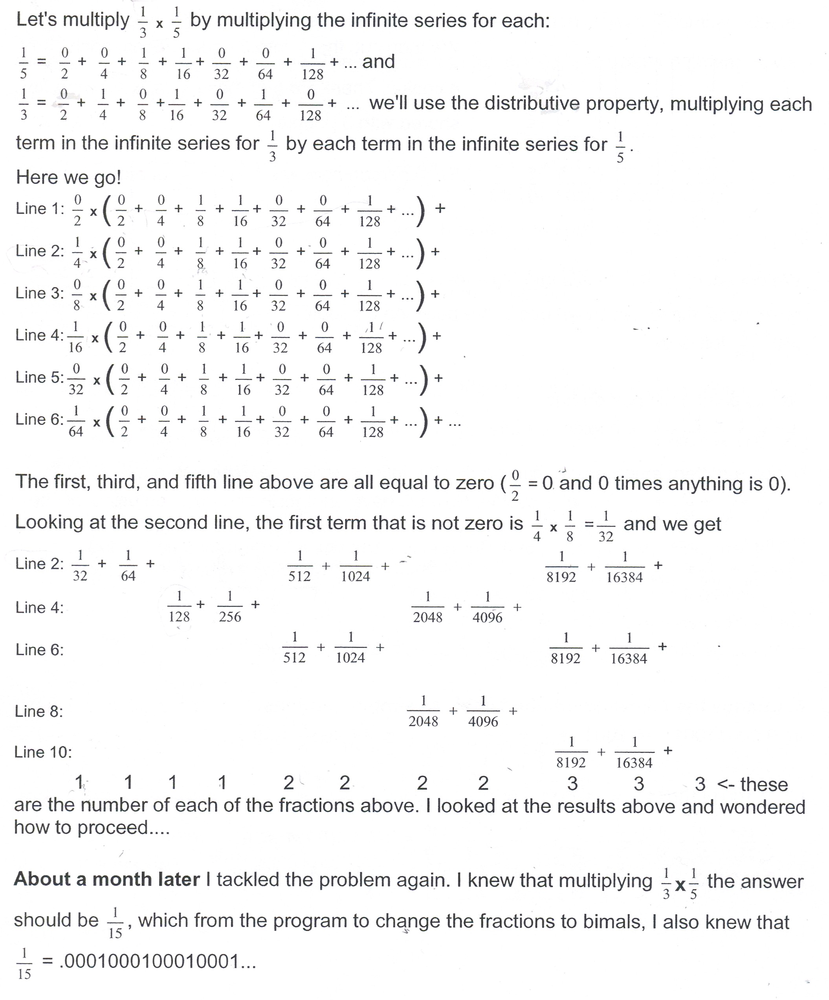
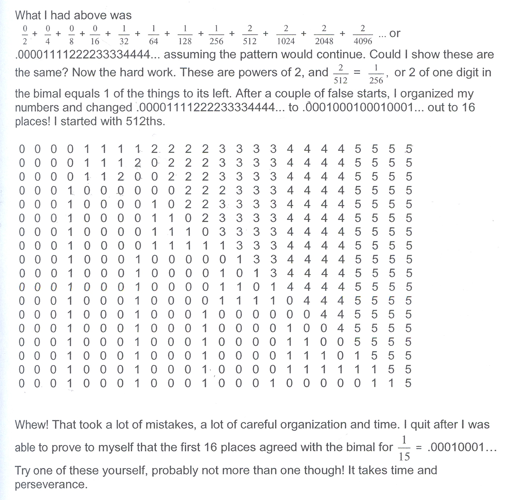

Multiplying Infinite Series/Chapter 2
The following multiplication of 1/3 * 1/5 as infinite series was done by Justin, an 8th grader from Keokuck, IA. He was a student of Debbie Denise Deese. Justin and a couple of other students formed The Order of Bimal. If you could multiply two infinite series correctly, you were in.

Justin found the bimal .00010001... was equal to 1/15. Don doesn't have the actual work Justin did, so he is including his work below, from his Worksheet book, to show how he did the actual multiplication of the infinite series. It was time-consuming, hard, but satisfying!
Don multiplies 1/3 * 1/5 as infinite series:

It helped a lot to use 1/4" graph paper to keep track of all the work below.

Grace, who worked with Don via email from Chicago, also did a mutiplication of infinite series, but he thinks she made an error.
Don would love to hear from you if you do a multiplication of infinite series or anything else you do using his materials.
See chapter 2 and the Ch. 2 answer section